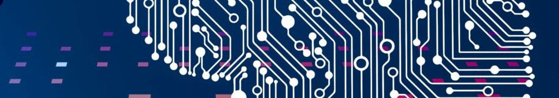
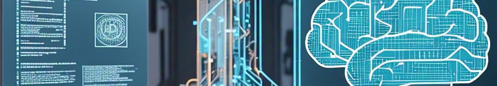

GPT از افسانه تا واقعیت

جهت دهی مدلهای هوش مصنوعی

در این سری از مقالات سعی دارم به زبانی ساده فناوری پشت مدلهای پیشرفته هوش مصنوعی دنیا را آموزش بدهم. از شنیدن نظرات و پیشنهادات برای بهتر کردن متن های کنونی و موضوعات پیشنهادی شدیدا خوشحال خواهم شد.